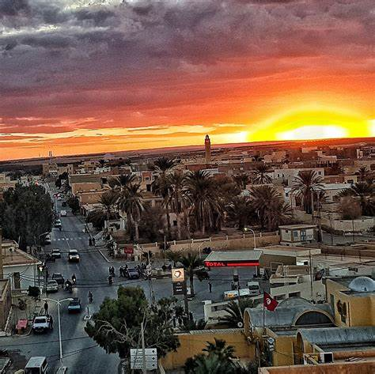
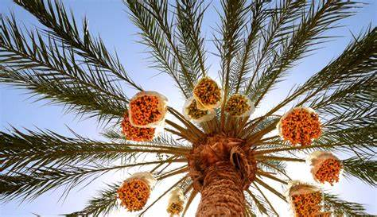
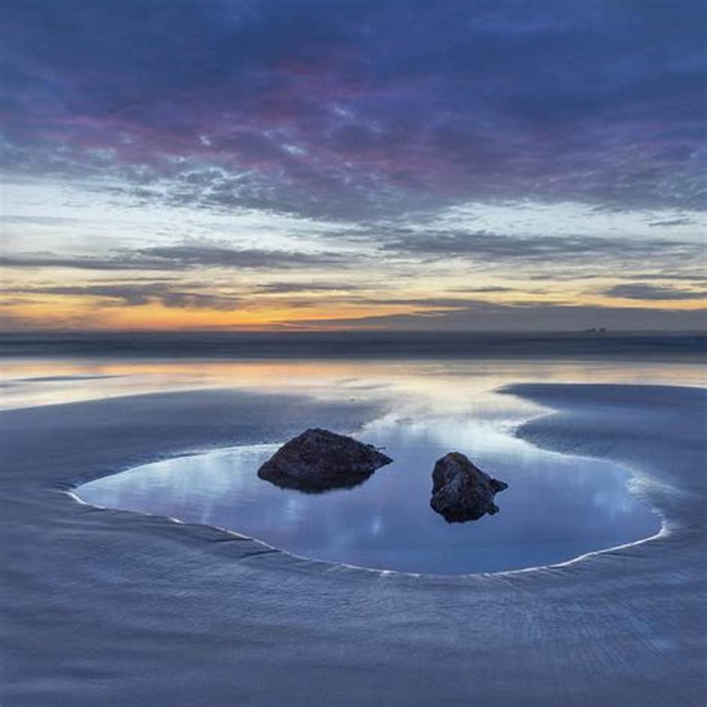

Destinations dans le Sud Tunisien

Deguech
Oasis verdoyante entre désert et montagne : parfaite pour randonnées et escapades nature.
Découvrir

Hammamet Djerid
Village thermal entouré de sources chaudes et de paysages arides authentiques.
Découvrir

Chott el Djerid
Lac salé immense aux mirages fascinants : une expérience magique à ciel ouvert.
Explorer